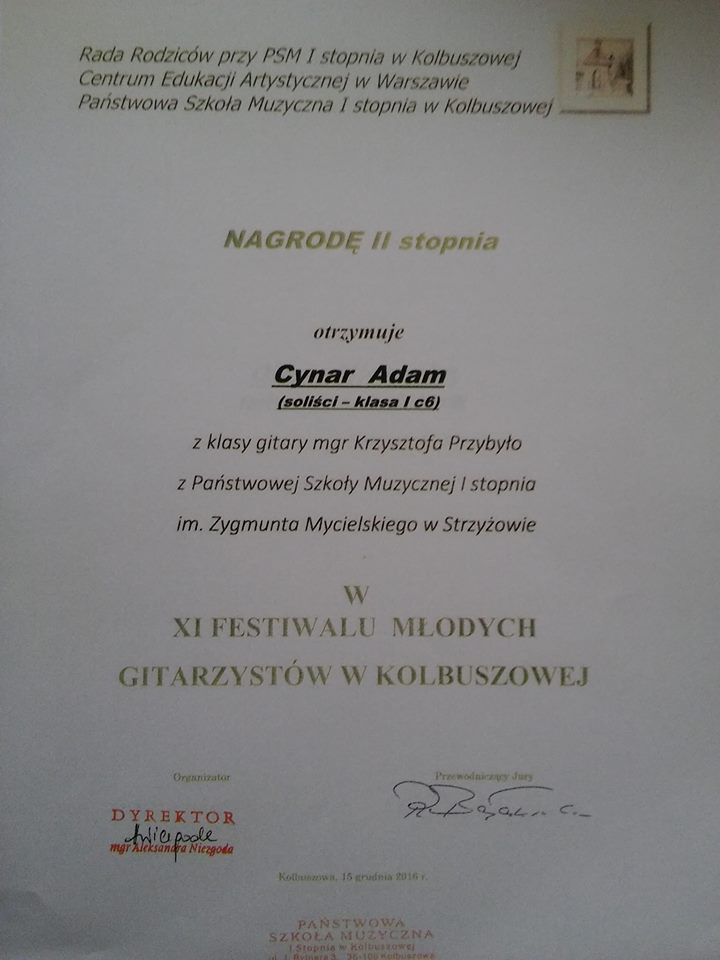

O mnie
Cześć! Czy słyszałeś/słyszałaś kiedyś kogoś na żywo grającego na gitarze podczas spotkań rodzinnych, na ognisku, na wycieczce lub w innym miejscu? Czy przeszło Ci przez myśl, że też byś tak chciał/chciała umieć? Jeśli tak, mogę Ci w tym skutecznie pomóc! Na gitarze zacząłem grać 21 lat temu, od 12 uczę. Uważam, że jak się chce być w czymś naprawdę dobrym, to należy bezustannie podnosić sobie poprzeczkę. Moja coraz wyżej podnoszona poprzeczka wyraża się w tym, że ciągle biorę udział w szkoleniach i warsztatach (TUTAJ WKLEJ LINK DO GALERII Z MOIMI DYPLOMAMI ZE SZKOLEŃ) a moi uczniowie zdobywają nagrody na konkursach regionalnych i ogólnopolskich. Uczę na każdym poziomie zaawansowania i osoby w każdym wieku- metryka nie ma znaczenia! Moja najmłodsza uczennica miała 4 lata, mój najstarszy uczeń 56 lat, ale... Podczas kursu gitarowego w Grotnikach- byłem po pierwszym roku studiów- poznałem pana, który drugi rok uczył się grać na gitarze a miał ich 72 !!! Zapytałem: dlaczego Pan to robi? -Bo całe życie o tym marzyłem a teraz w końcu mam sposobność... Efektami mojej obecnej pracy pochwalić mogę się w zakładce „Osiągnięcia Uczniów”. W 2010 roku napisałem i obroniłem pracę magisterską „Skuteczna komunikacja między nauczycielem a uczniem w procesie nauczania gry na gitarze”. Komisja Akademii Muzycznej w Łodzi oceniła ją bardzo dobrze. Cały czas dążę tą drogą rozwijając swoje kompetencje. Po jednym ze szkoleń i przeczytaniu sporej ilości książek psychologicznych zacząłem pracować z uczniami nad usuwaniem tremy. Sam z tym problemem borykałem się latami. Był to dla mnie problem „wielkiej tremy”, która mnie zjadała i nie mogłem sobie poradzić podczas koncertów. Dopiero na studiach zacząłem sobie uświadamiać różne podejścia, zacząłem nad tym świadomie pracować. Efektem mojej świadomej pracy nad wystąpienia publicznymi są moi zadowoleni uczniowie, którzy chętnie biorą udział w koncertach, przesłuchaniach, konkursach. - Uczę grać na gitarze klasycznej i akustycznej od podstaw poprzez wszystkie poziomy zaawansowania. - Koncentruję się co do wymagań ucznia/rodzica i indywidualnie dopieram plan rozwoju. - Pokazuję uczniom ( zainteresowanym) jak strach sceniczny ( tremę ) zamienić w odwagę! - Pomagam osobom, które już umieją grać a utknęli na jakimś poziomie. Pracujemy nad rozwiązaniem blokad. Zależy mi, aby każdy kto wyjdzie z mojej lekcji miał nowe umiejętności bez względu na poziom zaawansowania. Uczę z wykorzystaniem: - wiedzy psychologicznej - skutecznego planowania - zasad efektywnej nauki - mnemotechnik Do każdego ucznia podchodzę indywidualnie. Na lekcjach uczniowie dostają ode mnie wszelkie materiały dydaktyczne. Zależy mi na tym, żeby uczniowie już po krótkim czasie nauki mogli zaprezentować się przed szerszym gronem- czy podczas rodzinnego spotkania, czy na koncercie- z chęcią prezentując swoje umiejętności. Zapraszam do odwiedzenia mojego kanału na YouTube oraz kontaktu!
Osiągnięcia uczniów
Żeby zobaczyć slider ze zaświadczeniami trzeba ustawić komórkę na pozycji portretowej/pionowej


- 
Mój kanał na YouTube
SubskrybujReferencje
Cennik
60zł godzina zegarowa
45zł godzina lekcyjna
pakiet 5 godzin zegarowych 240zł
pakiet 10 godzin zegarowych 450zł
pakiet 5 godzin lekcyjnych 180zł
pakiet 10 godzin lekcyjnych 340zł
Kontakt
Telefon:
535 589 080
Email:
przybylokrzysztof@gmail.com
Skype:
Krzysztof Przybyło